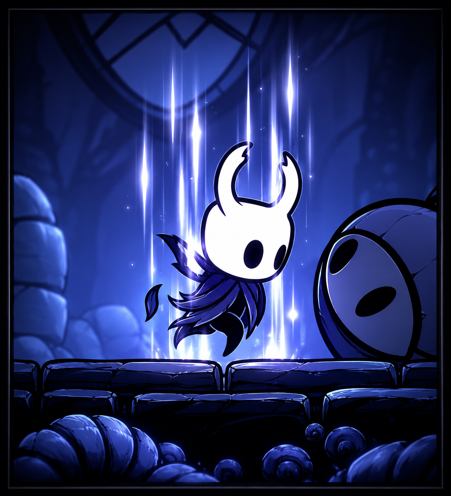
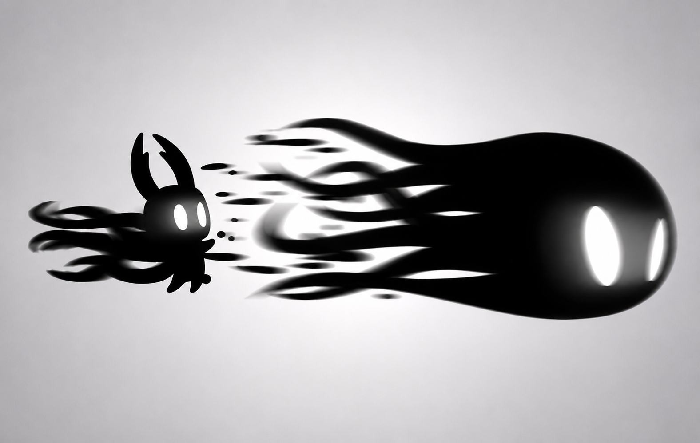
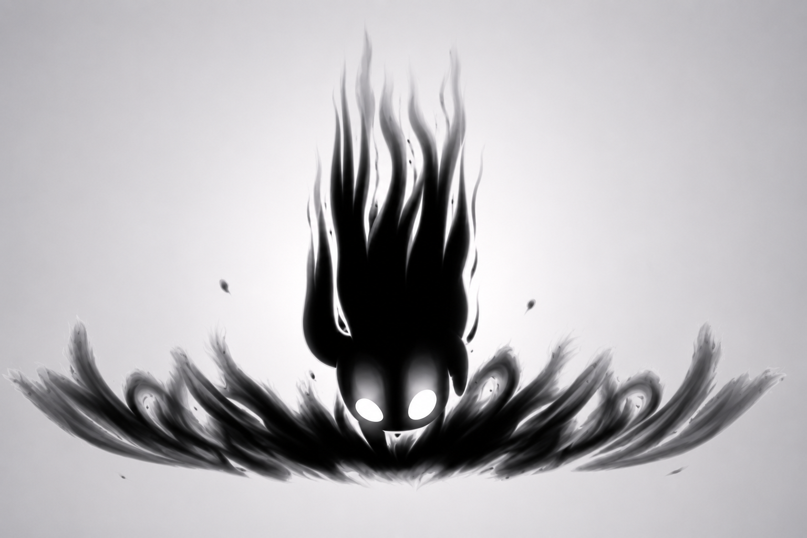
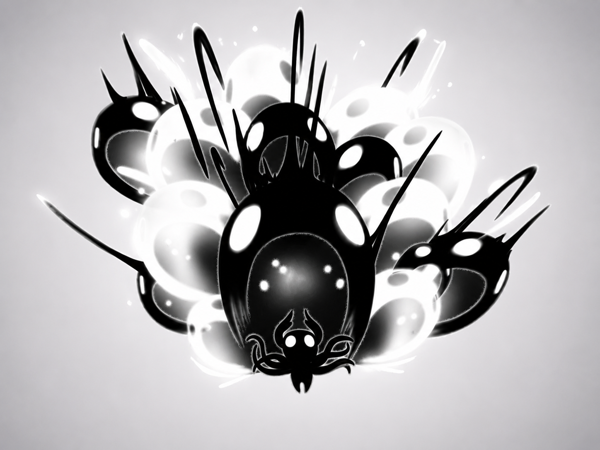

El Alma
El alma es lo primordial en Hollow Knight, la coseguiremos a la hora de pegarle a un enemigo o en totems de alma, los cuales encontraremos por todo hallownest, el alma nos permitira curarnos y lanzar hechizos ofensivos.

Concentración
Se explica al inicio del juego, al momento de que recibimos daño de algun modo, tendremos que curarnos y eso lo haremos con la concentración, manteniendo precionado el boton del alma durante unos segundos para regenerar nuestras mascaras (vidas).

Hechizos de Alma
El primer hechizo que recibiremos sera el "Espiritu Vengativo" el cual tambien podremos mejorar al "Alma sombria" hechizo cual podremos usar dandole una vez rapidamente al boton del alma, gastandonos una parte de nuestra alma para hacer un ataque a larga distancia que hara daño a nuestros enemigos.

Hechizo hacia abajo
El segundo hechizo que recibiremos sera el "Salto Desolador" el cual tambien podremos mejorar a la "Oscuridad Descendente" hechizo cual podremos usar apuntando hacia abajo y dandole rapidamente al boton del alma, callendo hacia abajo en un golpe de alma que hace daño cuando pegamos en el piso, el cual tambien nos da invulnerabilidad durante un muy corto periodo de tiempo.

Hechizo hacia arriba
El tercer hechizo que recibiremos seran los "Espectros Aulladores" los cuales tambien podremos mejorar al "Chillido del Abismo" hechizo cual podremos usar apuntando hacia arriba y rapidamente dandole al boton del alma generando una explosión de alma arriba nuestro que hara mucho daño a todo enemigo que este encima de nosotros.